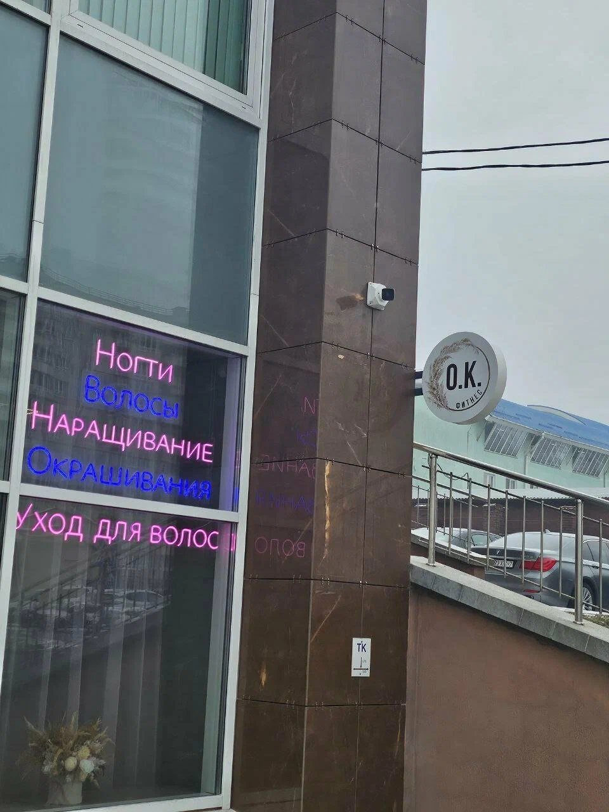

Запись


Как нас найти
Запишитесь в Instagram или по телефону, а дорогу подскажут эти три шага.
Instagram@vpotoke.fitТелефонМаршрутЯндекс Карты
Расписание занятий и свободное время уточняйте при записи.
1
Найдите дом
Проспект Дзержинского, 21. Рядом остановка Белита-Витэкс (165 м) и метро Грушевка (580 м).

2
Ищите голубую дверь
Вход в студию отдельный. На двери висит табличка с режимом работы.
3
Поднимитесь на 2 этаж
Студия находится на втором этаже, помещение 506.